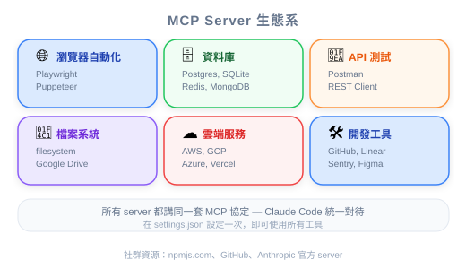
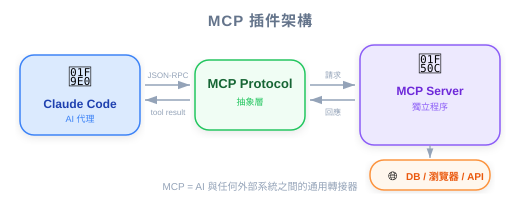
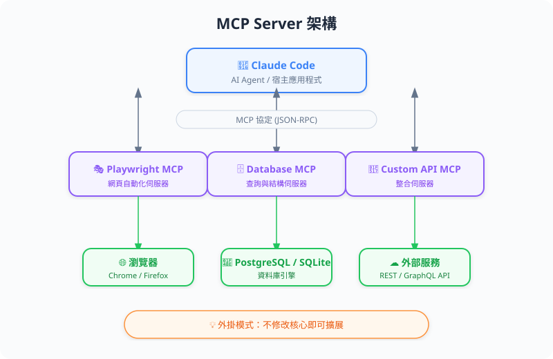

| 项目 | 内容 |
|---|---|
| 考试对应 | D2 — Tool Use & Integration（占 18%） |
| Task Statements | 2.4 ★★★（MCP integration）、2.1 ★★（tool interfaces）、2.3 ★★（tool distribution） |
| 课程来源 | claude-code-in-action / 04-integrations / Lesson 12 |


MCP server 是 Claude Code 的 plugin 系统。它让你扩展 Claude 能做的事 — 浏览网页、查数据库、操作 API — 不需要改 Claude Code 本身。PM 的关键洞察：MCP server 把「Claude 做不到 X」变成「Claude 做得到 X」，而且是在架构层面解决。这跟 prompt engineering 根本不同 — prompt 只能在 Claude 既有能力范围内运作。
| 概念 | App Store 类比 | MCP Server 实际 |
|---|---|---|
| 核心产品 | 开箱即用的 iPhone | Claude Code 内建工具（Read、Write、Bash 等） |
| 扩展 | 安装一个 app | 加入 MCP server |
| 权限 | 「允许存取相机？」 | 「允许 mcp__playwright 工具？」 |
| 生态系 | App Store 目录 | MCP server registry |
| 设置 | App 设置 | .claude/settings.local.json |
🎯 考试核心哲学（PM 必记）
- Architecture > Prompt — 如果 Claude 需要某种能力，给它工具（MCP server）。不要试图用 prompt 让它做结构上做不到的事。
- Explicit Permissions > Blanket Access — 特别是在 CI/CD 里，每个工具都必须逐一允许。
你的团队用 AI 生成 component。生成出来的 component 看起来很 generic — 全是紫到蓝渐变和标准的 Tailwind patterns。产品目标是生成更有创意、更有辨识度的 component。
| 做法 | 实现方式 | 结果 |
|---|---|---|
| 只用 prompt engineering | 在生成 prompt 加「要更有创意」 | 改善有限 — Claude 没有视觉反馈 |
| MCP + 视觉反馈回路 | 安装 Playwright MCP → Claude 生成 component → Claude 打开浏览器看结果 → Claude 根据视觉评估更新 prompt | 显著改善 — Claude 根据实际视觉输出迭代 |
💡 PM 决策框架
问自己：「这需要 Claude 感知或交互 context window 以外的东西吗？」
- 是 → 你需要 MCP server（架构解决方案）
- 否 → Prompt engineering 可能就够了
| 影响面 | 没有 MCP | 有 MCP |
|---|---|---|
| 视觉 QA | 人工 review | Claude 通过 Playwright 自动验证 UI |
| 数据库操作 | 复制粘贴 query 结果给 Claude | Claude 直接查询 DB |
| API 测试 | 手动测 endpoint | Claude 测试 endpoint 并验证响应 |
| 开发速度 | Claude 盲写代码 | Claude 生成、验证、自主迭代 |
MCP server 有一套权限模型，PM 应该了解以做 risk assessment：
| 设置 | 位置 | 谁控制 | 安全等级 |
|---|---|---|---|
| 本地全部允许 | .claude/settings.local.json |
个人开发者 | 低 — 方便开发 |
| 项目共用 | .claude/settings.json |
团队 / Tech Lead | 中 — 团队标准 |
| CI/CD 明确列出 | GitHub Actions workflow 文件 | DevOps / 团队 | 高 — 逐一列出每个工具 |
💡 PM Takeaway
在 production/CI 环境里，MCP 工具权限必须逐一列出。没有「允许这个 server 的所有工具」的捷径。这是刻意的安全设计 — 要纳入你的 risk assessment。
你的团队希望 Claude Code 能验证生成的 UI component 是否符合设计规格。目前开发者是手动比对截图。你会建议什么？
一个 PM 在 scope 一个需要 Claude 跟 PostgreSQL 数据库交互的 AI 功能。工程师说「我们直接在 prompt 给 Claude schema 让它写 query 就好」。更好的做法是什么？